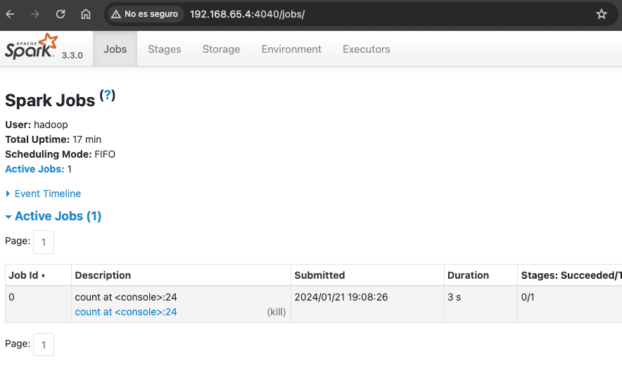

Instalación y configuración inicial.
https://keepcoding.io/blog/usar-spark-con-scala/
¿Qué es Spark?
Spark es una plataforma open source muy usada en la industria para el procesamiento de grandes volúmenes de datos y ejecución de cómputo intensivo sobre estos. Un framework que ofrece gran valor transformando y analizando datos relevantes que ayudan a grandes compañías a tomar mejores decisiones de negocio.
Esta plataforma contiene módulos y librerías para trabajar mejor con los datos que se quieren procesar. Además, Spark es multilenguaje, por lo que se puede programar tanto en Scala, Phyton, Java o R.
¿Por qué programar en Spark con Scala?
Se trata de un lenguaje de programación con recorrido ya que tiene dos décadas en el mercado. Además, Scalable language (Scala), es un lenguaje híbrido entre programación orientada a objetos y programación funcional. Por lo que, al tener las ventajas de uno y otro, es un lenguaje bastante funcional y práctico. De ahí que sea bueno usar Spark con Scala.
Tiene menos código para realizar algunas funciones en comparación con otros lenguajes. Esto es de utilidad debido a que se puede reducir el código a la mínima expresión y así leerlo más rápido para corregir posibles problemas.
Además, es compatible con la máquina virtual de Java, esto significa que podrás reusar librerías de Java en tus aplicaciones Scala, tendrás compatibilidad con el código en Java y te podrás beneficiar de una comunidad consolidada en el panorama de la programación de Spark con Scala.
RDD - Resilient Distributed Dataset
La unidad básica de datos que se utiliza en este ecosistema (stack) se llama RDD (Resilient Distributed Dataset). Se trata de una lista de datos, pero que no está toda junta, sino que está en diferentes máquinas (según el clúster).
Esta colección de datos es inmutable (no se puede cambiar), aunque sí que se pueden aplicar transformaciones u operar con ellos mediante actions.
En cuanto al ciclo de vida del RDD, de una unidad básica se realizan transformaciones de los conjuntos de datos (según los objetivos previstos para cada caso), se aplica una acción y al final obtenemos un resultado. Es decir, si tenemos varios petabytes con información de vuelos comerciales en los últimos años, realizaremos transformaciones para quedarnos con los datos que nos interesan y podríamos aplicar una acción para sumarle un número específico a los RDD (con el objetivo final de facilitarnos un sumatorio de vuelos realizados, por ejemplo).
Ahora llevemos toda esta teoría a la práctica y, para eso, aquí te dejamos un ejercicio hecho por Marco Doncel, en donde descubrirás cómo funciona el código de Spark con Scala.
Instalación y configuración
-
Descargar en la máquina virtual (en /usr/local/), usamos el usuario hadoop
https://archive.apache.org/dist/spark/spark-3.3.0/spark-3.3.0-bin-without-hadoop.tgz -
Descomprimir
- Crear enlace a carpeta llamado “spark”
- Modificar .bashrc
## spark
export PATH=$PATH:/usr/local/spark/bin:/usr/local/spark/sbin
export SPARK_DIST_CLASSPATH=$(hadoop classpath)
Ejemplo con scala
Ejecutamos el comando: spark-shell
Al ejecutar spark-shell se crea una sesión o contexto, tal y como indica
Spark context Web UI available at http://192.168.65.4:4040
Spark context available as 'sc' (master = local[*], app id = local-1705859488688).
Spark session available as 'spark'.
Para realizar cualquier instancia a Spark a continuación, deberemos proceder a través del contexto (sc).
Podemos ver los comandos disponibles con:
Ejercicio
Leer un fichero ubicado dentro del directorio spark descomprimido y contar palabras dentro (por defecto, si no ponemos
ubicación, buscará en el sistema HDFS de Hadoop). Recordar instanciar a través del contexto "sc".
Si instanciamos “fichero” como vemos anteriormente, nos devuelve un objeto RDD tipo String y que apunta al fichero indicado.
fichero: org.apache.spark.rdd.RDD[String] = file:///opt/hadoop/spark/README.md MapPartitionsRDD[1] at textFile at <console>:23
Podemos hacer un “count” para saber cuántas líneas tiene el fichero cargado en el RDD.

Resultado
Salimos de la shell con
Ejemplo con python
- Abrimos una shell de
pyspark
- Ejecutamos el siguiente código
Si da error, es que necesitamos instalar python3